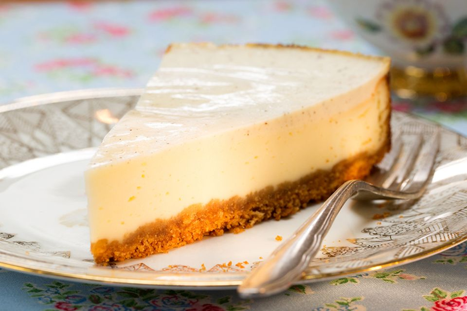

Cheesecake Recipe

Ingredients
- 3 cups all-purpose flour
- 1 cup white sugar
- 1 cup packed light brown sugar
- 2 teaspoons baking soda
- 7 tablespoons unsweetened cocoa powder
- 1 teaspoon salt
- ¾ cup vegetable oil
- 2 teaspoons vanilla extract
- 2 tablespoons distilled white vinegar
- 2 cups water
Steps
- Preheat oven to 350 degrees F (190 degrees C). Grease one 9 inch square baking pan.
- Whisk together the flour, sugars, baking soda, cocoa and salt. Stir in the vegetable oil, vanilla and vinegar. Pour batter into the prepared pan and pour the water over the top. Draw a fork through the batter to just barely mix.
- Bake at 350 degrees F (175 degrees C) for 35 minutes. Let cool slightly and serve warm.